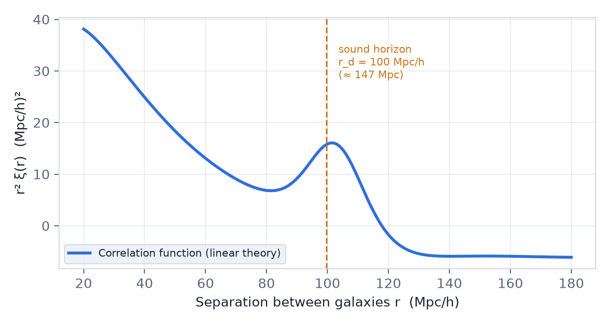
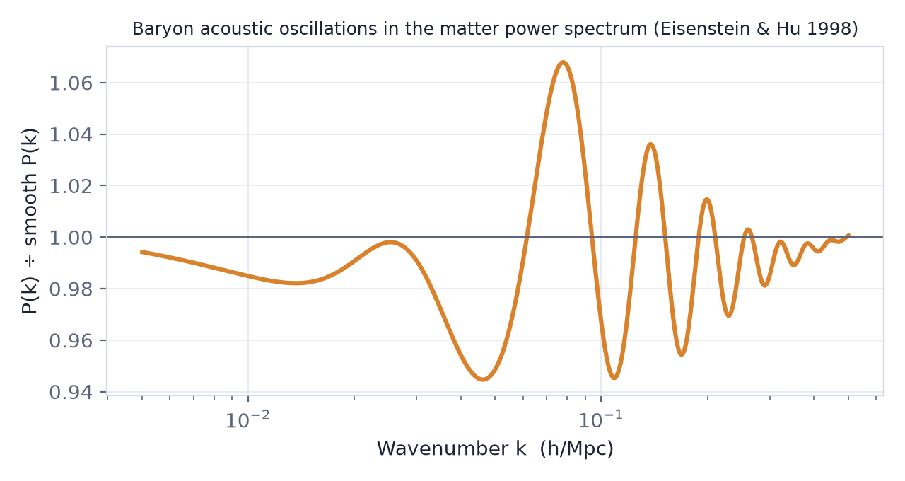
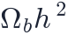
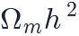

In this lesson you will learn
|
An echo in the distribution of galaxies
In lesson L5.1 we saw sound waves in the plasma before recombination imprint peaks on the CMB. The same waves also left a mark in the matter of the universe, which galaxy surveys can see billions of years later.
A single ripple
Imagine one small overdense region in the early universe, containing dark matter, baryons, photons and neutrinos.
- The photon–baryon plasma is pushed outwards by the huge pressure of the photons, travelling as a spherical sound wave at about .
- Dark matter feels no pressure and stays near the centre, growing by gravity.
- At the drag epoch, shortly after recombination (), photons release the baryons. The baryon shell stops at a radius equal to the sound horizon .
- Gravity now pulls dark matter towards the shell and baryons back towards the centre. Both locations end up with extra matter, and galaxies later form a little more often in both places.
A preferred separation The real universe is a superposition of countless such ripples. The result is a slight excess of galaxy pairs separated by the sound horizon at the drag epoch: This excess is called baryon acoustic oscillations (BAO). |
Where to see it
The correlation function. The two-point correlation
function measures how much more likely than random it is to find two
galaxies at separation  . BAO shows up as a single bump near .
. BAO shows up as a single bump near .

The power spectrum. In Fourier space, the same bump becomes a series of gentle oscillations with an amplitude of a few percent, the cousins of the CMB acoustic peaks.

Discovery The BAO signal was first detected in 2005, simultaneously by the Sloan Digital Sky Survey (Daniel Eisenstein and colleagues, using luminous red galaxies) and by the 2dF Galaxy Redshift Survey (Shaun Cole and colleagues). Both found the peak exactly where the CMB predicted. |
A standard ruler
The sound horizon is calculated from physics that the CMB measures precisely. That makes BAO a standard ruler: an object of known size whose apparent size gives a distance (lesson L2.7).
- Across the sky, the BAO scale subtends an angle , which measures the transverse comoving distance.
- Along the line of sight, it spans a redshift interval
, which measures the expansion rate
 directly.
directly.
How big does the ruler look? For Planck 2018 parameters, the BAO scale covers about 4.3° on the sky for
galaxies at , 2.5° at |
Try it: Cosmology Calculator Look up the comoving distance at z = 0.5 and divide 147 Mpc by it to find the BAO angle in radians. |
Why BAO is so robust
- The scale is large: 150 Mpc is far bigger than galaxies and clusters, so the complicated physics of galaxy formation barely shifts it.
- It is a feature, not an amplitude: its position can be measured even if we do not know exactly how galaxies trace matter.
- It is calibrated by the CMB: depends mainly on

and
, measured independently.
Non-linear gravitational motions slightly smear the peak, but these effects are well understood and can be partly undone ("reconstruction").
What BAO has taught us
Surveys such as BOSS and eBOSS (SDSS), WiggleZ, and since 2021 the Dark Energy Spectroscopic Instrument (DESI) have measured BAO at redshifts from 0.1 to above 2, using galaxies, quasars and the Lyman-α forest of intergalactic hydrogen.
- Together with the CMB, BAO confirms that space is flat and that dark energy makes up about 70% of the universe (lesson L3.3).
- BAO alone, combined with the CMB sound horizon, gives km/s/Mpc, on the "early universe" side of the Hubble tension.
- DESI results released in 2024 and 2025 hint that dark energy may be slowly weakening, instead of being a perfect cosmological constant. More data are needed to confirm or refute this.
Not a galaxy-sized pattern BAO does not mean galaxies sit on visible rings 150 Mpc across. The excess is only a few percent and becomes visible only statistically, in maps of hundreds of thousands of galaxies. |
Remember this
|